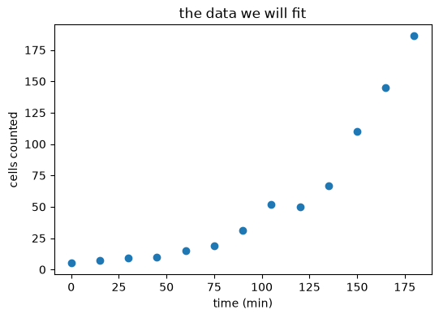
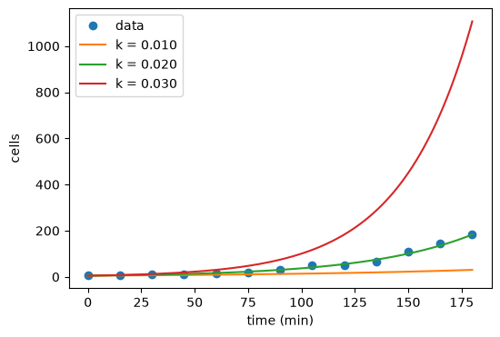
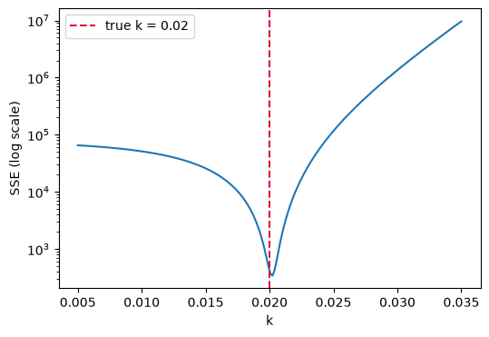
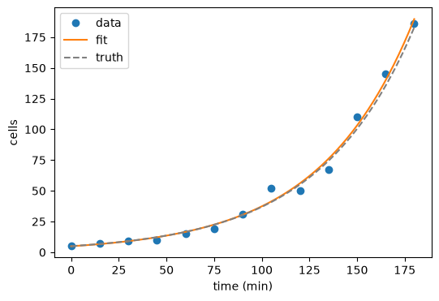
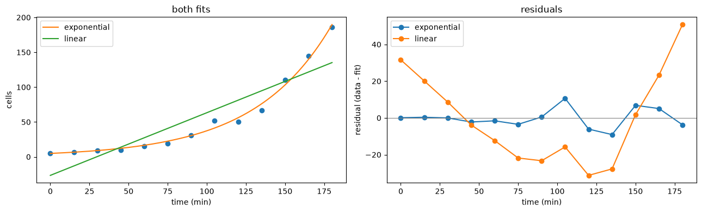

Data Analysis: curve fitting#
Duration ~40 min · Session Day 2, Python notebooks
The measurements are now a table of numbers. The last step is usually to fit a model to them, turning “here are 13 measurements” into “the doubling time is 34 minutes”, which is the sort of statement a paper is actually made of.
This notebook is deliberately not about images at all.
This notebook covers
what “best fit” means, and how to compute it
using
scipy.optimize.curve_fitjudging whether a fitted model is appropriate, not merely fitted
extracting a meaningful quantity, with an uncertainty, from the parameters
This is direct preparation for the challenge.
1. A measurement with a known answer#
We start with simulated data, for one reason: we know the true parameters, so the fit can be checked against them. Real data never offers that, which is exactly why it is worth doing once here.
The scenario: cells growing in a dish, counted every 15 minutes for three hours.
import numpy as np
import matplotlib.pyplot as plt
rng = np.random.default_rng(7)
TRUE_N0 = 5.0 # cells at t = 0
TRUE_K = 0.020 # growth rate, per minute
time = np.arange(0, 181, 15.0)
# Counting noise is multiplicative. A bigger population varies more in
# absolute terms so the noise is applied as a factor, not an offset.
counts = np.round(TRUE_N0 * np.exp(TRUE_K * time) * rng.lognormal(0, 0.18, time.size))
plt.figure(figsize=(6, 4))
plt.plot(time, counts, "o")
plt.xlabel("time (min)")
plt.ylabel("cells counted")
plt.title("the data we will fit")
plt.show()
print("counts:", counts.astype(int))

counts: [ 5 7 9 10 15 19 31 52 50 67 110 145 186]
2. What does ‘best fit’ mean?#
A fit needs three things:
a model: a function with adjustable parameters;
a measure of misfit: how badly a given set of parameters describes the data;
a procedure for finding the parameters that minimise it.
For growth the natural model is exponential:
and the standard measure of misfit is the sum of squared errors:
Squared, so that overshoots and undershoots both count as error and cannot cancel out.
def exponential(t, n0, k):
"""Exponential growth: n0 cells at t=0, growing at rate k per minute."""
return n0 * np.exp(k * t)
def sse(observed, predicted):
"""Sum of squared errors."""
return float(np.sum((observed - predicted) ** 2))
# Three guesses, by hand.
for n0, k in [(5.0, 0.010), (5.0, 0.020), (5.0, 0.030)]:
print(f"n0={n0:4.1f}, k={k:.3f} -> SSE = {sse(counts, exponential(time, n0, k)):10.0f}")
n0= 5.0, k=0.010 -> SSE = 51364
n0= 5.0, k=0.020 -> SSE = 415
n0= 5.0, k=0.030 -> SSE = 1351826
plt.figure(figsize=(6, 4))
plt.plot(time, counts, "o", label="data")
smooth = np.linspace(0, 180, 200)
for n0, k in [(5.0, 0.010), (5.0, 0.020), (5.0, 0.030)]:
plt.plot(smooth, exponential(smooth, n0, k), label=f"k = {k:.3f}")
plt.xlabel("time (min)"); plt.ylabel("cells"); plt.legend()
plt.show()

The middle one is clearly best, and its SSE is clearly lowest. Fitting is just doing that comparison automatically over every possible parameter value.
3. Seeing the landscape#
# SSE over a grid of k, holding n0 at its true value.
ks = np.linspace(0.005, 0.035, 200)
landscape = [sse(counts, exponential(time, TRUE_N0, k)) for k in ks]
plt.figure(figsize=(6, 4))
plt.plot(ks, landscape)
plt.axvline(TRUE_K, color="crimson", linestyle="--", label=f"true k = {TRUE_K}")
plt.yscale("log")
plt.xlabel("k"); plt.ylabel("SSE (log scale)")
plt.legend()
plt.show()
print("best k on this grid:", round(float(ks[np.argmin(landscape)]), 4))

best k on this grid: 0.0202
One clear minimum, close to the true value. A fitting routine walks downhill on exactly this surface.
Not every problem looks so friendly. With more parameters the surface can have
several local minima, and an optimiser started in the wrong place will settle in
the wrong one, which is why curve_fit accepts an initial guess, and why a
sensible one matters.
4. Doing it properly#
from scipy.optimize import curve_fit
parameters, covariance = curve_fit(exponential, time, counts, p0=(1.0, 0.01))
fitted_n0, fitted_k = parameters
# The diagonal of the covariance matrix holds the parameter variances.
errors = np.sqrt(np.diag(covariance))
print(f"n0 = {fitted_n0:.2f} +/- {errors[0]:.2f} (true: {TRUE_N0})")
print(f"k = {fitted_k:.4f} +/- {errors[1]:.4f} (true: {TRUE_K})")
n0 = 4.90 +/- 0.66 (true: 5.0)
k = 0.0203 +/- 0.0008 (true: 0.02)
Both parameters recovered, and curve_fit also returned a covariance matrix
whose diagonal gives the uncertainty on each one.
Report those uncertainties. A growth rate quoted without one is not a result, it is a number, and the difference matters as soon as anyone asks whether two conditions really differ.
plt.figure(figsize=(6, 4))
plt.plot(time, counts, "o", label="data")
plt.plot(smooth, exponential(smooth, *parameters), "-", label="fit")
plt.plot(smooth, exponential(smooth, TRUE_N0, TRUE_K), "--", color="0.5", label="truth")
plt.xlabel("time (min)"); plt.ylabel("cells"); plt.legend()
plt.show()

5. From parameters to something meaningful#
k = 0.02 per minute means little to a biologist. The doubling time does.
Set \(N(t) = 2N_0\) and solve:
doubling_time = np.log(2) / fitted_k
# Propagate the uncertainty: for T = ln2/k, dT/dk = -ln2/k^2.
doubling_error = np.log(2) / fitted_k**2 * errors[1]
print(f"doubling time = {doubling_time:.1f} +/- {doubling_error:.1f} min")
print(f"true = {np.log(2) / TRUE_K:.1f} min")
doubling time = 34.1 +/- 1.4 min
true = 34.7 min
This is the pattern to remember. Fit a model, then convert its parameters into the quantity the reader cares about: a doubling time, a half-life, an IC50.
The same arithmetic appears in the challenge, which asks for the concentration at which growth is halved, which comes out of a fitted decay constant in exactly this way.
6. Is the model right?#
curve_fit fits whatever it is given. It has no opinion about whether the model
makes sense, and a returned parameter is not evidence that it does.
def linear(t, intercept, slope):
return intercept + slope * t
linear_parameters, _ = curve_fit(linear, time, counts)
print(f"exponential SSE : {sse(counts, exponential(time, *parameters)):10.0f}")
print(f"linear SSE : {sse(counts, linear(time, *linear_parameters)):10.0f}")
exponential SSE : 339
linear SSE : 7786
fig, axes = plt.subplots(1, 2, figsize=(13, 4))
axes[0].plot(time, counts, "o")
axes[0].plot(smooth, exponential(smooth, *parameters), label="exponential")
axes[0].plot(smooth, linear(smooth, *linear_parameters), label="linear")
axes[0].set_xlabel("time (min)"); axes[0].set_ylabel("cells"); axes[0].legend()
axes[0].set_title("both fits")
# Residuals are where a bad model gives itself away.
for name, predicted in [
("exponential", exponential(time, *parameters)),
("linear", linear(time, *linear_parameters)),
]:
axes[1].plot(time, counts - predicted, "o-", label=name)
axes[1].axhline(0, color="0.5", linewidth=0.8)
axes[1].set_xlabel("time (min)"); axes[1].set_ylabel("residual (data - fit)")
axes[1].legend(); axes[1].set_title("residuals")
plt.tight_layout()
plt.show()

The right-hand panel is the one to learn to read. A good model leaves residuals scattered randomly around zero. The linear fit’s residuals are positive, then negative, then positive: a smooth arc, not noise.
That pattern means the model is the wrong shape, and no amount of refitting will fix it. Always plot the residuals; they reveal what a fitted curve drawn over the data will happily hide.
Recap#
step |
what it is |
|---|---|
choose a model |
a function with parameters, motivated by the biology |
choose a misfit measure |
usually SSE |
minimise it |
|
check the uncertainties |
|
check the residuals |
structure means the wrong model |
convert to something meaningful |
doubling time, half-life, IC50 |
The step people skip is the residual check, and it is the one that catches the error that matters: a plausible-looking fit of a model that does not describe the process at all.
Next: 06_curve_fitting_ex, which fits real counts from a real timelapse, where
the model turns out not to fit as neatly as this one did.